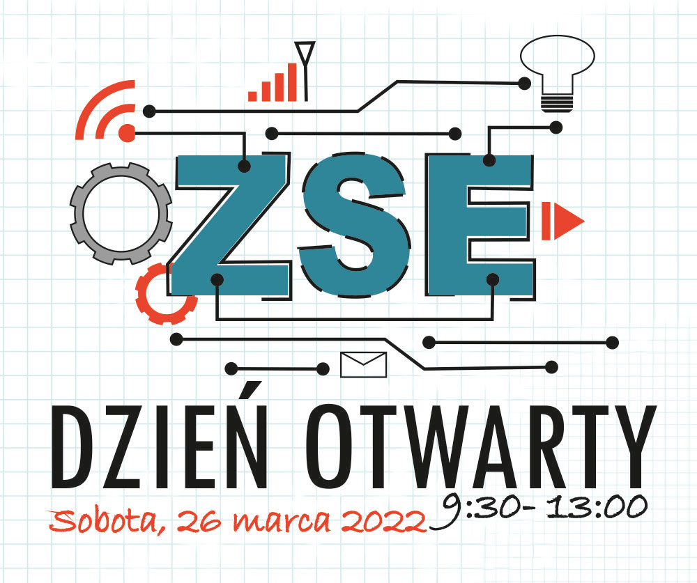
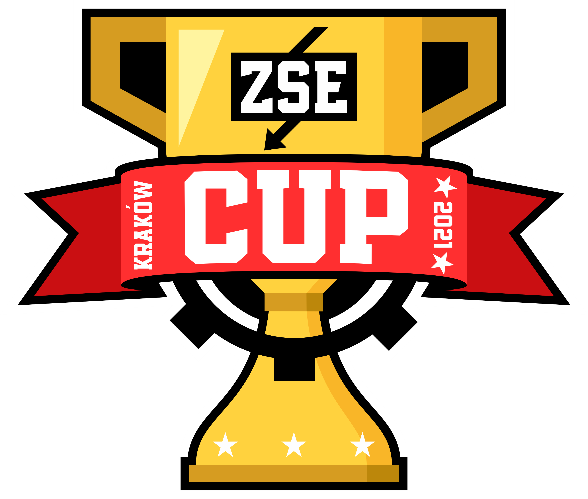
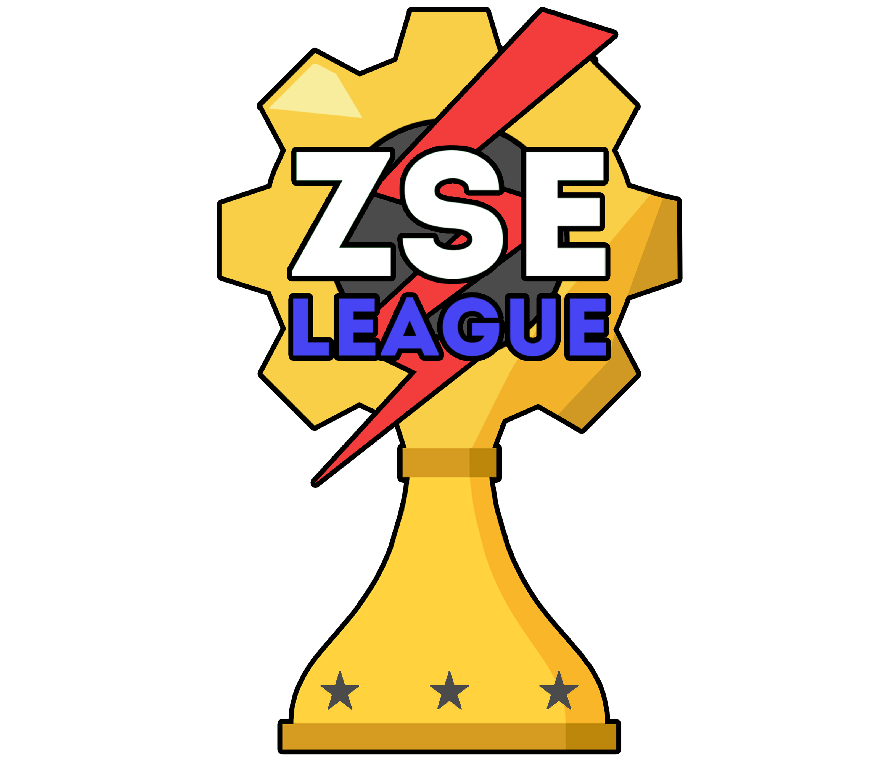
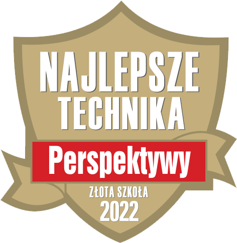

24 marca odbyła się 2 edycja naszego turnieju ZSE LEAGUE.
W tym roku uczestnicy rywalizowali między sobą w grze Minecraft w trybie Bingo.
Rozgrywki są stworzone dla szkół podstawowych z całego powiatu krakowskiego.
W tej edycji zapisało się ponad 20 drużyn z 15 różnych szkół.
Zespoły rozegrały 24 mecze, aby wyłonić najlepszych.
22 marca odbyły się finały piątej edycji ZSE CUP. Zwycięzcy automatyczne zostali członkami szkolnej reprezentacji e-sportowej ZSE Dragons. Oto oni:
Counter-Strike: Global Offensive
Mieszanka Wybuchowa - XD
• Wojciech "Gonciar" Gonciarczyk
• Ersan "S4noskY" Kazmi
• Antonio "Cz4rnv" Janiszewski
• Patryk "KrzywyG" Krzyworzeka
• Jan "Juster" Biel
24 marca odbyła się 2 edycja naszego turnieju ZSE LEAGUE.
W tym roku uczestnicy rywalizowali między sobą w grze Minecraft w trybie Bingo.
Rozgrywki są stworzone dla szkół podstawowych z całego powiatu krakowskiego.
W tej edycji zapisało się ponad 20 drużyn z 15 różnych szkół.
Zespoły rozegrały 24 mecze, aby wyłonić najlepszych.

Dzięki zaangażowaniu grona pedagogicznego i pracy uczniów, Technikum Energetyczno-Elektroniczne nr 9 im. Tadeusza Kościuszki w Krakowie znalazło się na
31. miejscu wśród najlepszych techników w Polsce w Rankingu Liceów i Techników i uzyskało tytuł "Złotej Szkoły 2021".
Pełna informacja na stronie www.perspektywy.pl